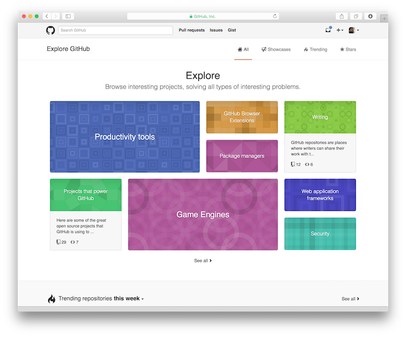
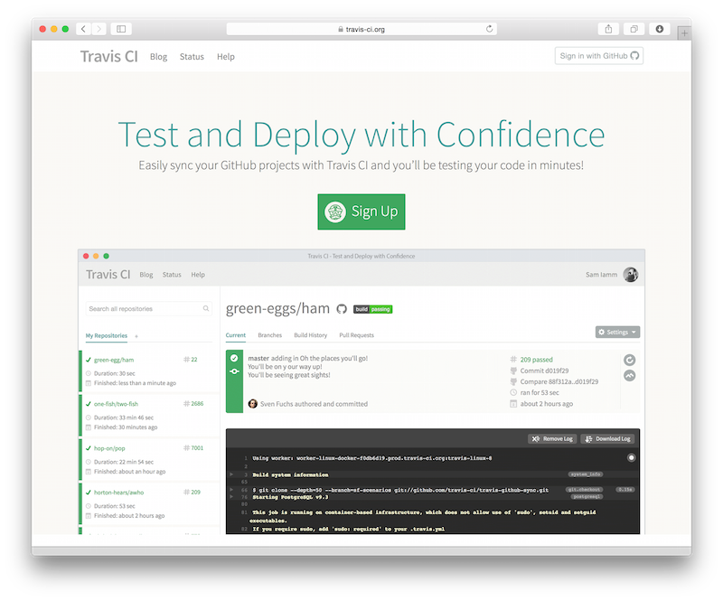
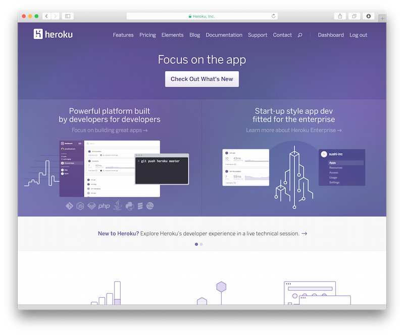

The ThoughtWorks office in Berlin is located in one of the nicest areas of town. Right next to Wasserturm and Kollwitzplatz, across the street from Immanuelkirche. People like working there a lot, but there is one problem - it is not really an office, but more of a meetup space, which is why it is called Werkstatt.
There are only a few sets of keys for Werkstatt. If you are on the beach, or just want to stop by after work to have one of the 15 different types of "Mate" Sodas, you might be standing in front of a locked door. Wouldn't it be nice if you could check if there is someone there, before leaving home? And wouldn't it be nice to do so without calling/slacking/mailing several people who you think might eventually have a key?
So the solution I envisioned was a simple webpage, that at a first glance would show the status. Green glyph for "someone's there", red glyph for "Werkstatt is closed". That would fulfill the problem statement. Such a simple thing should not cost much, if any money. The benefit of such a page, after all, is that thoughtworkers would save €2.70 for a public transportation ticket, in case no one is there, or €5.40 roundtrip. Given once a month someone travels to Werkstatt to find a closed door, and we could potentially save €64.80 a year, the whole project should not cost more than €9.72 to run; 15% Cost of Goods Sold is the high watermark (see here and here) in the Software-as-a-Service business.
With that earnings/savings potential, it should be easy and quick to build, too. The development cost must amortize over a couple of years. So let's look at a simple Tech stack.
To build, test and host an application, we need a few things. The easiest of all solutions would just be a static page, served by Apache httpd, nginx or IIS, which would be updated through sftp. While simplest, it has a few problems: who is able to chnage the status then? How is the web server configured? Who makes sure it stays up? Who creates accounts for upload? So this solution that would have been sufficient in the 90s is not an option any more.
The minimum stack from my experience would be:
There are several available for the various programming languages:
The natural choice for me would have been Perl, but that would have minimized the collaborating opportunity with other thoughtworkers, for some odd reason the greatest of all programming languages is not very popular within ThoughtWorks (ducks and hides while the flame wars begin). With ruby I'm very familiar, and so seem people around me, so I chose sinatra.
The app will display and change state. This needs to be kept somewhere. I tend to use well-proven solutions, for this project I considered:
git and (github.com). No need for experiments here.
For a sinatra project, heroku is available for easy deployments and free (as in beer) hosting. Heroku also offers a redis-as-a-service addon. So, we're almost done.
I wouldn't consider a project to be "live" unless it is fully instrumented. That is, performance is measured, access to it can be analysed, and there is alerts whenever something goes wrong. Even a small service like this might get mission critical before too long - so think about APM, logging and alerting right from the start. Alternatives for those services are plenty available, the ones mentioned above are just examples.
Automating logging, monitoring and alerting comes at a cost. The alternative is to manually monitor while the App is used by a small number of people for non-mission critical Tasks. So I thought about it and decided against implementing those right from the start.
In comparison to that - continuous testing is not optional. I had never tried travis, but heard it's good and easy. Turned out to be true for this project.
At first, we need to create a new project on github.  Get an account, click "new project" and follow the steps listed to check it out into a local folder. On my MacBook, use a sub directory of my home directory called "src" when I check out projects.
First, the auto-generated README.md can be filled with some information. To use sinatra, we should have bundler installed, a ruby gem which makes management of gems for applications easy:
sudo gem install bundler
Now we'll create a Gemfile with the following content:
source 'https://rubygems.org' # tell bundler where to look for gems
gem 'sinatra' # the framework we'll be using
gem 'redis' # for the persistence layer
gem 'mock_redis' # in tests, we'll use a local mock instance for persistence
gem 'rake' # rake is ruby's "make" - automation for build/test tasks
gem 'rack-test' # sinatra uses the rack middleware API, to test it, there's a gem
gem 'rspec' # test framework
gem 'json' # translate json objects to ruby and vice versa
After that, run
bundle install
In the directory and the gems will be installed. The app is almost ready - to start up the development server, we need a config.ru file:
require './app' # load our app
run Sinatra::Application # and run it
And finally, we'll start with a very simple app.rb: - nope, wait. We'll create the data model first. So:
mkdir models
and edit models/status.rb
require 'mock_redis'
class Status
def initialize
@redis = MockRedis.new( :url => ENV["REDISTOGO_URL"] ) # later, that env variable will be filled.
end
def get
status = @redis.get "status"
if status == nil
false
elsif status == "true"
true
else
false
end
end
def set status
if status == true
@redis.set "status", "true"
true
elsif status == false
@redis.set "status", "false"
else
false
end
end
end
Why would we write the model first? This doesn't display anything on the screen, aye? it does not, but we can test whether everything works as expected. So, we
mkdir spec
And create a Rakefile to tell rake how to run the tests:
require 'rake'
require 'rspec/core/rake_task'
RSpec::Core::RakeTask.new(:spec) do |t|
t.pattern = Dir.glob('spec/**/*_spec.rb')
end
task :test => :spec
task :default => :spec
if you run
rake
now, your tests should be successful. Woohoo! But wait. We haven't written one yet. So let's create spec/status_spec.rb:
ENV['RACK_ENV'] = 'test'
require './models/status'
describe "the status model" do
status = Status.new
it "has methods get and set" do
expect(status).to respond_to :get
expect(status).to respond_to(:set) .with(1) .argument
end
it "returns true get when setting status to true" do
status.set true
expect(status.get) .to eq true
end
it "returns false get when setting status to false" do
status.set false
expect(status.get) .to eq false
end
it "set() returns true when setting status with a boolean" do
response = status.set false
expect(response) .to eq true
response = status.set true
expect(response) .to eq true
end
it "set() returns false when setting status with something else and does not set status" do
response = status.set "foo"
expect(response) .to eq false
expect(status.get) .to eq true
response = status.set nil
expect(response) .to eq false
expect(status.get) .to eq true
end
end
I know. It seems trivial. But we'll extend that model, and a very simple mistake during refactoring might break even the simplest methods. Next up: Display the status. For that, we want a web page, and that is created through a template. Let's go, create views/index.erb
<!doctype html>
<html>
<head>
<title>Is someone at Werkstatt?</title>
</head>
<body>
<h1><%= @someone_there ? "YES" : "nope" %></h1>
</body>
</html>
That means: when the status in the database is set to true, it will print yes, otherwise it'll print nope.
Let's create an app.rb to tie it all together:
$:.unshift File.join(File.dirname(__FILE__))
$:.unshift File.join(File.dirname(__FILE__), 'models')
require 'sinatra'
require 'models/status'
require 'json'
set :views, File.join(File.dirname(__FILE__), 'views')
get "/" do
status = Status.new
@someone_there = status.get
erb :index
end
if we now run
bundle install
rackup
And point the browser to http://localhost:9292/, we are greeted with a friendly "nope". Let's add buttons to change the status:
<p><a href="come">I'm here now.</a> <a href="go">I'm going home.</a></p>
...paste that after the h1 element in views/index.erb, and add the following routes to app.rb:
get "/come" do
status = Status.instance
status.set true
redirect_to "/"
end
get "/go" do
status = Status.instance
status.set false
redirect_to "/"
end
See the Status.instance thing in there, instead of Status.new? That is because we'll make the Status object a singleton, so it persists between requests; also, redis-to-go, which we'll use later, can only handle a single connection in the free tier, latest when that is used, we'll get into trouble. So, change Status.new to Status.instance in the get "/" route as well, and replace the model with this:
require 'mock_redis'
require 'singleton'
class Status
include Singleton # Calling Status.new will give an error now. Use Status.instance instead.
def initialize
@redis = MockRedis.new( :url => ENV["REDISTOGO_URL"] ) # later, that env variable will be filled.
end
def get
status = @redis.get "status"
if status == nil
false
elsif status == "true"
true
else
false
end
end
def set status
if status == true
@redis.set "status", "true"
true
elsif status == false
@redis.set "status", "false"
else
false
end
end
end
in the spec/status_spec.rb, you also need to replace Status.new with Status.instance, and after that rake should tell you your app still tests nicely. Pounting your browser back to http://localhost:9292/, you should see the two links now, and if you click them, the page reloads and shows the new status.
Tempting to write css now, add images, make the page all nice and shiny, isn't it? Details, we can do that later. Far more important is to get it live, so we can start using it. The good thing is that everything so far is covered by tests. Or, is it? we can also test whether the webapp behaves as expected. To do so, let's add another test file, spec/app_spec.rb.
ENV['RACK_ENV'] = 'test'
require './models/status'
require 'rack/test'
require 'sinatra'
require './app'
describe "the web app" do
include Rack::Test::Methods
def app
Sinatra::Application
end
it "returns 200 on getting the index" do
get '/'
expect( last_response ).to be_ok
end
it "return 302 when requesting /come" do
get '/come'
expect(last_response.status).to be 302
end
it "has set absence when calling /come" do
expect( Status.instance.get ).to be true
get '/' # virtually follow it
expect(last_response.body).to match /yes/i
end
it "return 302 when requesting /go" do
get '/go'
expect(last_response.status).to be 302
end
it "has set presence when calling /go" do
expect( Status.instance.get ).to be false
get '/' # virtually follow it
expect(last_response.body).to match /nope/i
end
end
This will now simulate a quick manual testing session - does the database state reflect what I have clicked? Does the web page reflect the database? It is possible to do really, really complex tests even for what is normally considered a manual testing effort, so these end-to-end tests are necessary. Run rake - the tests should all pass.
With that, we should git commit (if you haven"t already) and git push, so the code is save and others can contribute. But before doing that, let's have a look at travis-ci:

With your github account, you can sign up there. Add the new project through the UI, and then well add a .travis.yml file to our repo:
language: ruby
This is all that it needs. when you commit and push now, travis will build and test the project. All tests green? Let's push it live.
The app gets to the internetz through heroku, a platform-as-a-service. 
When you sign up for it, it will give you a tutorial style start. Do that, and then finally deploy your app:
heroku apps:create
git push heroku master
Le App is live! Now it's time to get a domain. There is a lot of domain registrars out there, most of which have terrible user interfaces, try to trick you into upsales, spam you, or: all of the above. I found hover to be the least terrible of them, and they sponsor a few of my favourite podcasts, but of course you're free to choose. The domain is the only thing that will cost hard money in this project, in this case it was $13.- for one year. Click it, set the CNAME to your heroku URL and tell heroku that you did so. A couple of minutes later, your app should be available on the new domain.
Check the app that is live currently, and the code. Maybe you clone it and use it for personal meetings. Or for your shop. Or for small villages, where shops/doctors/offices are only open infrequently. Feature requests go through github, same with bugs; pull requests are of course welcome.